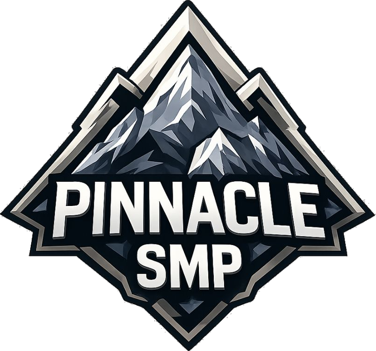
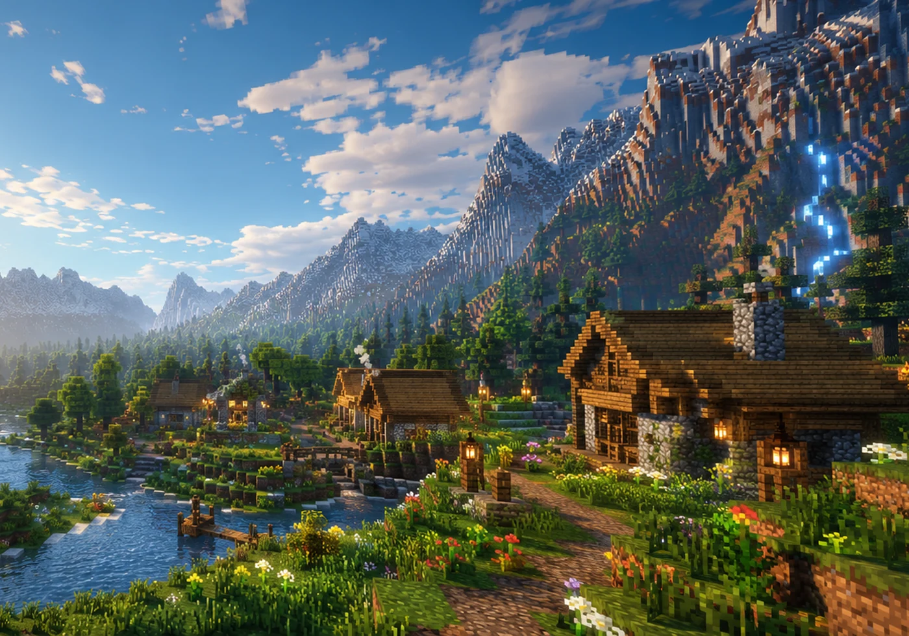

Community-focused survival
Community-focused survival gameplay
SEASON 12 · PAPER 26.2 · JAVA EDITION

WHITELISTED · VANILLA+ · 18+ ONLY
A small, established Minecraft community built around long-term survival worlds, trust, collaborative projects, and a welcoming atmosphere.
WELCOME TO PINNACLE SMP
Pinnacle SMP is a small, established Minecraft community built around long-term survival worlds, trust, collaborative projects, memorable events, and a welcoming atmosphere.
Season 12 began in April 2026. Players are developing a community-built spawn town, connecting bases and projects, taking part in events, and allowing the world to grow organically over time.
Learn about Pinnacle
SEASON 12 · COMMUNITY-BUILT WORLDWHY PINNACLE
Long-term worlds with resets decided by the community.
Community-focused survival gameplay
Vanilla-first experience with carefully selected plugins
Room for builders, explorers, redstoners, and casual players
24/7 hosting in the eastern United States
HOW TO JOIN
Whitelist applications are open — Pinnacle SMP is accepting new members.
Confirm that you are at least 18 years old and read the complete server rules.
Submit the application through the official Discord process. A short interview may follow.
After approval, check #server-info for connection instructions.
SERVER NEWS
Build something that captures the feeling of fall, win a prize, and keep your winning build featured at Spawn!
Read the full updateNew Members with 0 playtime will be removed from the whitelist on Monday. Recently accepted players should log in before then to keep their place.
Read the full updatePinnacle SMP added several custom plugins and restored key community tools to make the server safer, easier to manage, and more connected.
Read the full updateUPCOMING EVENTS
COMMUNITY GALLERIES
FREQUENTLY ASKED QUESTIONS